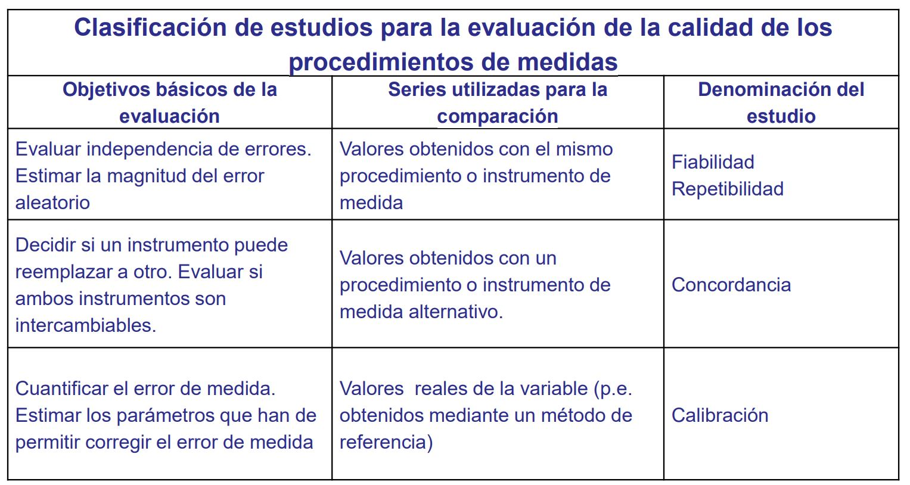

1. Introducción ✓
Definiciones basadas o pensadas sobre el modelo teórico
Prevalencia
Probabilidad de que se observe algo. (porque estamos en el modelo teórico)
Pueba diagnóstica
Prueba que se usa para ayudar a diagnosticar una enfermedad o afección según los signos y síntomas que presenta una persona. Las pruebas diagnósticas también se usan para diseñar un tratamiento, determinar la eficacia de un tratamiento y hacer un pronóstico.
Rápidamente pensamos que es algo clínico pero no siempre es así. Puede ser un examen donde yo asigne un nivel de conocimiento. La prueba diagnóstica puede fallar porque puede dar una nota menor a la real o dar un mayor conociemiento que el verdadero.
Las pruebas diagnósticas clínicas o experimentales sirven para localizar y situar a un individuo dentro de una clasificacion precisa (una medida según un baremo) o grupo que le corresponde (aprobado/enfermo, sano/enfermo, brazo roto/brazo no roto).
Dependiendo del tipo de variable al que esté asociada la p.d. nos indica qué metodología vamos a usar.
Debo tener claro para qué fin realizo la p.d..
Para ver si una prueba diagnóstica cumple su objetivo nos apoyamos en estimaciones basadas en el modelo teórico. Las estimaciones están basadas en los valores que nos den los individuos. Para tener buenas estimaciones necesito buenas medidas. Un aspecto fundamental en estudios de investigación es garantizar la calidad de los procedimientos de medida. La calidad de una medida depende tanto de su fiabilidad como de su validez.
- La fiabilidad indica hasta qué punto se obtienen los mismos valores al efectuar la medición en más de una ocasión, bajo condiciones similares.
- La validez expresa el grado en el que realmente se mide el fenómeno de interés.
Que una medida sea muy precisa no implica que sea necesariamente válida. Por ejemplo, si se realizan dos mediciones consecutivas a un paciente con una herramienta mal calibrada los valores obtenidos seguramente serán parecidos aunque inexactos. (Fisterra 2024)
Clasificación de estudios para la evaluación de la calidad de los procedimientos de medidas
- Fiabilidad: comparación/variación consigo mismo. (concordancia intraobservador)
- Concordancia: comparación/variación con otro observador (interobservador) o entre métodos.
- Calibración: comparación/variación con un método estándar.

Fiabilidad, repetibilidad.
Medidas fiables/repetibles/reproducibles.
Estabilidad \(\Rightarrow\) Individuos con caracteristicas similares darán lugar a medidas similares.
Estudios de fiabilidad. Intentan evaluar como concuerdan las medidas obtenidas por un único método o instrumento. Se evalúa el error de medida del método mediante el estudio de la concordancia intramétodo, si las medidas concuerdan se puede decir que el método es repetible.
Concordancia.
Si la damos la vuelta podríamos pensar en independencia. Personas que funcionan de forma independiente. (no lo termino de pillar)
Estudios de concordancia: se desea evaluar como concuerdan las medidas realizadas con el método cuya calidad se desea valorar con los obtenidos por otro método. Valoramos la concordancia entre métodos de medida con el objetivo de determinar si ambos son intercambiables.
Las técnicas utilizadas para estudiar la concordancia varían según la naturaleza de las variables, dependiendo de si las medidas corresponden a una escala de medida cualitativa o cuantitativa.
La concordancia adquiere importancia cuando se desea conocer si con un método o instrumento nuevo, diferente al habitual, se obtienen resultados equivalentes de tal manera que eventualmente uno y otro puedan ser remplazados o intercambiados ya sea porque uno de ellos es más sencillo, menos costoso y por lo tanto más costo-efectivo, o porque uno de ellos resulta más seguro para el paciente, entre otras múltiples razones. En términos generales, la concordancia es el grado en que dos o más observadores, métodos, técnicas u observaciones están de acuerdo sobre el mismo fenómeno observado. La concordancia no evalúa la validez o la certeza sobre una u otra observación con relación a un estándar de referencia dado, sino cuán acordes están entre sí observaciones sobre el mismo fenómeno. (Camargo-Ramos y autores 2012)
Calibración.
No solo queremos que no haya errores de medida. Cuando calibramos algo lo calibramos con un instrumento. Calibrar es comparar las medidas que tenemos con un método con otras medidas que están aprobadas por todos (gold standar).
Estudios de calibración: pueden verse como caso particular de los estudios de concordancia entre métodos, cuando se compara un procedimiento de medida con los valores reales o de referencia (gold standard).
En el mundo clínico existe mucha confusión debido a que heredamos mucha terminología inglesa ya que a veces no tiene una equivalencia.
La medida de un individuo vendrá dada por características que podemos medir y por algo intrínseco del propio individuo. ¿Qué factores influyen para que haya resultados diferentes entre individuos con las mismas características? Esos factores son el error. Queremos medir esa parte intrínseca al individuo y que no podemos incluir en el modelo.
El error lo queremos controlar midiéndolo con diferentes metodologías. ¿El error es diferente dependiendo de la metodología?
\[ \displaylines{ & \text {Sea X el resultado de la prueba diagnóstica} \\ &\begin{array}{cccc} \hline \text { Tipo de la variable X } & \text { Objetivo de la prueba } & \text { Índice o argumento de concordancia } \\ \hline \text {Cualitativo} & \text {La prueba clasfica} & \text {Coeficiente kappa} \\ \text {Cuantitativo} & \text {Tiene una unidad de medida} & \text {Concordancia intraclase} \\ & & \text {Método gráfico de Bland y Altman} \\ \hline \end{array} } \]